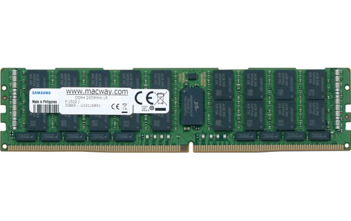
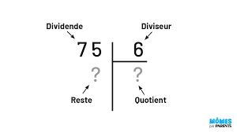
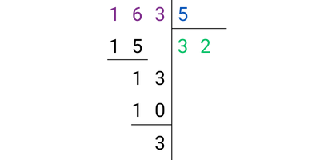

Les variables et le type entier
Prédire la valeur
Écris la valeur de l'expression demandée comme Python l'écrirait ('abc', True, 2.0), puis valide. Quand le champ est marqué « affiche », écris plutôt ce que le programme affiche. Si le programme s'arrête sur une erreur, écris erreur. Les valeurs changent à chaque essai.
Rappel d'ouverture (5 minutes, cours fermé)
Réponds sans rouvrir les chapitres sur la représentation de l'information et l'architecture, en écrivant tes réponses. Se tester est ce qui fixe les acquis, relire ne le fait pas.
- Combien de valeurs différentes peut-on coder sur un octet ? Quelle est la plus grande, en écriture binaire ?
- Dans le Little Man Computer, à quoi servent les instructions
STAetLDA? - Convertis
1011(binaire) en décimal.
Correction
- 256 valeurs, de
0à255. La plus grande s'écrit11111111: huit bits, donc \(2^8\) combinaisons. STA(store) range une valeur à une adresse mémoire.LDA(load) lit la valeur qui s'y trouve. Ce sont les deux seules opérations de la mémoire : écrire et lire.1011vaut \(8 + 0 + 2 + 1 = 11\).
Ces trois questions ne sont pas là par hasard : cette page montre que ce que Python appelle une variable est exactement la case mémoire du Little Man Computer, avec un nom à la place d'une adresse.
Se souvenir d'une information
Le plus important
Une variable est le seul moyen de se souvenir d'une information entre les instructions d'un programme.
- Toute information qui n'est pas stockée dans une variable est perdue.
- Toute nouvelle information stockée dans une variable efface la précédente.
- Les variables sont stockées sous forme binaire dans la mémoire de l'ordinateur : la RAM.

Exercice
Ce programme devait calculer l'aire d'un carré pour pouvoir s'en servir plus loin. Il ne le fait pas. Qu'est-ce qui manque ?Exercice
Après ces deux lignes, on voudrait pouvoir se servir à la fois de7 et de 9. Est-ce possible en l'état ? Si non, que faut-il changer ?
Exercice
Combien de cases mémoire sont utilisées, et que vaut chacune à la fin ? Quelle valeur n'existe plus nulle part dans le programme ?Exercice
Sur combien de bits au minimum la valeur den tient-elle dans la mémoire ? Justifie.
Exercice
Un programme range une valeur dans une variable, puis l'ordinateur est éteint. Que devient cette valeur ? Dans quel composant était-elle pendant l'exécution ?
Une variable est une case mémoire nommée
Souviens-toi du modèle de von Neumann et du Little Man Computer : la mémoire est une suite de cases, chacune repérée par une adresse, et le processeur y range ou y lit des valeurs.
Une variable, c'est exactement cela : une case mémoire à laquelle on a donné un nom. Plutôt que de retenir « la case d'adresse 17 », on écrit age, et l'ordinateur sait de quelle case on parle.
Exercice
Pour chacune de ces deux lignes, dis si la machine lit une case, si elle écrit dans une case, ou les deux, et nomme la ou les cases concernées.Écrire dans une variable : l'affectation
Pour ranger une valeur dans une variable, on utilise l'opérateur =, appelé affectation.
= n'est pas l'égalité
= ne signifie pas « est égal à ». C'est une opération mécanique : « calcule ce qui est à droite, et range le résultat dans la variable de gauche ».
Si la variable n'existe pas encore, elle est créée. Sinon, son contenu est remplacé.
Ce que fait vraiment la machine
Cette opération correspond très exactement à une instruction du processeur. Dans le Little Man Computer, affecter une valeur, c'est l'instruction STA (store) : « écris cette valeur à telle adresse mémoire ». Ainsi a = 4 revient à ranger 4 dans la case étiquetée a.
Exercice
Que vautscore à la fin ? Combien de valeurs différentes cette case a-t-elle contenues au cours du programme, et combien en contient-elle à la fin ?
Lire une variable
On utilise le contenu d'une variable simplement en écrivant son nom dans une expression.
Ce que fait vraiment la machine
Lire une variable correspond à l'instruction LDA (load) du Little Man Computer : « va chercher la valeur à telle adresse ». On en obtient une copie : lire une variable ne la vide pas, on peut la relire autant qu'on veut.
Exercice
Que valentn et m à la fin ?
Indice
Dans n + n, on lit n deux fois. Combien vaut-il à la deuxième lecture ?
Afficher : sortir de la machine
Une variable sert à se souvenir à l'intérieur de la machine. Pour qu'une information en sorte, il faut une instruction de plus : print.
Appelée sans rien d'autre que la valeur à écrire, elle l'envoie sur la sortie standard, c'est-à-dire le terminal, donc l'écran. C'est son comportement par défaut, et on peut lui demander autre chose, mais ce ne sera pas utile ici.
Ce que fait vraiment la machine
C'est l'instruction OUT (output) du Little Man Computer : « envoie la valeur de l'accumulateur sur la sortie ». print(truc) enchaîne donc les deux instructions que tu connais déjà : LDA pour lire la case truc, puis OUT pour envoyer la valeur dehors.
C'est par là que la machine communique avec ses périphériques. OUT parle à l'écran, comme INP écoutait le clavier.
Exercice
Quelles instructions du Little Man Computer la deuxième ligne demande-t-elle ? Combien d'opérations la machine fait-elle ?Exercice
Qu'affiche ce programme ? Que valenta et b à la fin ? Une variable contient-elle 8 ?
Exercice
Qu'affichent les troisprint, dans l'ordre ?
Le membre de droite est calculé, puis rangé
Parce que = n'est pas l'égalité, une ligne comme celle-ci a un sens parfaitement clair :
En tant qu'égalité mathématique, ce serait absurde. En tant qu'affectation, c'est mécanique : on calcule d'abord la droite (a + 1, avec la valeur actuelle de a), puis on range le résultat dans a. Si a valait 4, il vaut maintenant 5.
Exercice
Que valentu et w à la fin ?
Indice
À la quatrième ligne, u ne vaut plus 2.
Dérouler un programme pas à pas
Suivons l'état des cases mémoire, instruction après instruction :
| Instruction | x |
y |
|---|---|---|
x = 10 |
10 | |
y = x + 2 |
10 | 12 |
x = 0 |
0 | 12 |
L'affichage est donc 0 12. Remarque que y garde 12 : sa valeur a été calculée au moment du y = x + 2, et changer x ensuite n'y touche pas.
Exercice
À ton tour de dérouler. Recopie le tableau et remplis-le ligne par ligne, puis donne l'affichage.
| Instruction | p |
q |
|---|---|---|
p = 2 |
||
q = p + 3 |
||
p = q |
||
q = p - 1 |
Exercice
Même travail avec trois cases.
| Instruction | r |
s |
t |
|---|---|---|---|
r = 1 |
|||
s = r + 1 |
|||
t = r + s |
|||
r = t |
Trace toi-même avec Python Tutor
Ne te contente pas de lire les traces : produis-les. Copie un programme dans Python Tutor, avance pas à pas et observe, à chaque instruction, ce que contiennent les cases mémoire. C'est le meilleur moyen de construire une image juste de ce que fait la machine, et c'est un réflexe à garder pour tout le cours.
Échanger le contenu de deux variables
Tu as déjà traité ce problème en langage machine, sur les cases n°10 et n°11. Rien ne change ici, sauf que les cases ont un nom au lieu d'un numéro.
Exercice
Écris la suite du programme pour quea vaille 7 et b vaille 4.
Indice
Écris la solution qui vient spontanément, a = b puis b = a, et déroule-la ligne par ligne. Quelle valeur n'existe déjà plus après la première ligne ?
La variable de passage
Trois affectations, et une variable de plus : c'est le prix d'un échange, et il n'y a pas moins cher. La raison est la même que dans la machine : une case ne contient qu'une valeur à la fois, donc celle qu'on va écraser doit être copiée ailleurs avant de l'être.
Exercice
Trois variables valent a = 1, b = 2, c = 3. On veut les faire tourner : à la fin, a doit valoir 3, b doit valoir 1 et c doit valoir 2. Chaque variable reçoit la valeur de la précédente.
Écris les instructions, sans utiliser le raccourci de Python.
Indice
Une seule valeur est menacée dès la première affectation que tu écris : celle de la variable que tu écrases en premier. Mets-la de côté avant.
Exercice
Que valenta, b et c à la fin ? Que fait ce programme, comparé à celui de l'exercice précédent ?
Le type d'une variable
Toute variable a un type, qui indique le genre d'information qu'elle contient :
| Type | Exemple | Signification |
|---|---|---|
int |
age = 16 |
un entier relatif, de l'anglais integer |
float |
taille = 1.75 |
un nombre à virgule |
str |
nom = "Alice" |
une chaîne de caractères |
bool |
majeur = True |
un booléen |
Python devine le type d'après la valeur rangée, et cela s'appelle l'inférence de type. On peut aussi l'écrire explicitement :
Rien n'y oblige, mais quand un programme s'allonge on finit par ne plus savoir ce que contient quoi. Prends l'habitude de noter le type à la création d'une variable.
Et pour savoir ce qu'une variable contient réellement, type le dit :
Calculer avec des entiers
Le type int vient avec ses opérateurs. Les voici tous, et il n'y en a pas d'autres au programme de cette année.
| Opération | Symbole | Exemple |
|---|---|---|
| addition | + |
17 + 5 donne 22 |
| soustraction | - |
17 - 5 donne 12 |
| multiplication | * |
17 * 5 donne 85 |
| quotient entier | // |
17 // 5 donne 3 |
| reste | % |
17 % 5 donne 2 |
| puissance | ** |
17 ** 2 donne 289 |
| division | / |
17 / 5 donne 3.4 |
Les priorités sont celles des mathématiques : la puissance d'abord, puis la multiplication et les divisions, puis l'addition et la soustraction. Les parenthèses passent avant tout.
/ ne rend jamais un entier
C'est le seul opérateur de cette table qui change de type : 10 / 2 donne 5.0, un float, et non 5. Même quand la division est exacte, même quand le résultat est un nombre rond.
Pour obtenir un entier, c'est // qu'il faut écrire : 10 // 2 donne 5.
Écrire plus court : +=
Ajouter quelque chose à une variable est si fréquent que Python offre une écriture abrégée pour le faire.
On appelle cela une affectation combinée. Il en existe pour les autres opérateurs, -=, *= et les suivantes, mais += est de loin la plus utilisée, parce qu'ajouter à un total ou à un compteur est ce qu'on fait le plus souvent.
Ce que fait vraiment la machine
Rien de nouveau : a += 3 lit a, calcule, et range le résultat dans a. C'est le LDA, le calcul, puis le STA que tu connais déjà. Seule l'écriture raccourcit, pas le travail de la machine.
Conséquence à retenir : la variable doit exister avant. a += 3 commence par lire a, donc si a n'a jamais reçu de valeur, le programme s'arrête sur une erreur.
Exercice
Réécris la deuxième ligne en écriture longue, et donne la valeur dec. Que se passerait-il si la première ligne n'existait pas ?
La division euclidienne
// et % sont les deux moitiés d'une même opération, celle que tu as apprise à l'école primaire.
Le vocabulaire, d'abord. On divise le dividende par le diviseur, ce qui donne un quotient et un reste.

Voici la division de 163 par 5, posée en entier.

Le quotient est 32, et on l'obtient par 163 // 5. Le reste est 3, et on l'obtient par 163 % 5.
Les deux propriétés à retenir
Pour une division de n par d :
d * (n // d) + (n % d)redonne toujoursn;- le reste est toujours plus petit que le diviseur. Un reste de
5ou plus dans une division par5voudrait dire qu'il reste de quoi faire un paquet de plus, donc que le quotient était faux.
Ce que cela veut dire
J'ai 163 chocolats et je veux les ranger dans des boîtes de 5. Je remplis 32 boîtes, et il me reste 3 chocolats.
\(163 = 5 \times 32 + 3\)
Exercice
On veut ranger 47 bonbons dans des sachets de 6.
Combien de sachets pleins, et combien de bonbons en trop ? Écris les deux calculs Python qui donnent ces deux nombres, puis vérifie ton résultat avec la première propriété.
Exercice
Peut-on écrire un programme où n % 5 vaut 7 ? Quelles valeurs cette expression peut-elle prendre ?
Exercice
Que valent 14 % 2 et 15 % 2 ? Et plus généralement, que t'apprend n % 2 sur n ?
Comment un entier est écrit en mémoire
Comme toute information, un entier est stocké sous forme d'une suite de bits groupés en octets. Deux fonctions donnent cette écriture.
bin donne l'écriture binaire, hex l'écriture hexadécimale. Les préfixes 0b et 0x ne font pas partie du nombre : ils sont là pour dire dans quelle base lire ce qui suit, puisque 10011101 tout seul serait ambigu.
Exercice
Qu'affiche ce programme ? Combien de bits occupe cette écriture, et tient-elle sur un octet ?Exercice
Qu'affiche ce programme ? Retrouve ce résultat à la main depuis l'écriture binaire10011101.
Faire entrer une information : input
Jusqu'ici, toutes les valeurs étaient écrites dans le programme. Pour qu'une information entre dans la machine pendant qu'elle tourne, il faut input.
Ce que fait vraiment la machine
C'est l'instruction INP (input) du Little Man Computer : « attends une valeur et mets-la dans l'accumulateur ». saisie = input() enchaîne donc INP puis STA, exactement comme print(truc) enchaînait LDA puis OUT.
Le texte entre parenthèses est la question posée à l'écran avant d'attendre.
input rend toujours du texte
Et c'est là que input cesse de ressembler à INP. Le INP du simulateur mettait un nombre dans l'accumulateur. input, lui, rend du texte, toujours, même quand tu as tapé 7. Tu peux le vérifier avec type.
Si on tape 7, ce programme affiche <class 'str'>, et pas <class 'int'>.
La conséquence est immédiate : on ne peut pas calculer avec.
Ce programme s'arrête sur une erreur, TypeError: can only concatenate str (not "int") to str. La machine refuse d'ajouter le nombre 1 à du texte, et elle a raison de refuser : ce sont deux informations de natures différentes.
La méthode, et elle ne change jamais
On convertit le texte en entier avec int.
Si on tape 7, ce programme affiche 8.
Garde toujours les deux lignes, l'une pour la saisie, l'autre pour la conversion. Elles font deux choses différentes, et les voir séparément est ce qui permet de savoir laquelle a échoué quand quelque chose ne marche pas.
La règle à retenir
input rend du texte. Si tu veux un nombre, tu le convertis à la ligne suivante, avec int.
Fais-le systématiquement, dès la saisie. Une saisie non convertie ne se voit pas tout de suite : elle se voit plus loin, au premier calcul, sous la forme d'une erreur dont la cause est quelques lignes plus haut.
Et ce « texte », qu'est-ce que c'est au juste ?
Il a un nom, un type (str), et des opérations qui lui sont propres. C'est l'objet du cours suivant, Les chaînes de caractère. Pour l'instant, retiens seulement la conversion.
Exercice
On tape41. Qu'affiche ce programme, dans l'ordre ? Et que vaut n à la fin ?
Exercice
On tape3 puis 8. Qu'affiche ce programme ? Et si on tape 8 puis 3 ?
Exercice
On tape12. Qu'affichent les deux print ?
Exercices
Comment faire ces exercices
Tout se passe dans un seul fichier, python/exos_variables.py, et chaque exercice commence par une ligne qui le repère :
Écris chaque nouvel exercice tout en haut du fichier, au-dessus des précédents. Celui sur lequel tu travailles s'exécute alors en premier, et tu n'as pas à retaper les saisies de tous les autres avant d'arriver à lui. Ton fichier se lit donc à l'envers, du plus récent au plus ancien, et les lignes Exercice 1, Exercice 2... te disent quel résultat appartient à quel exercice.
Chaque énoncé donne un exemple de saisie et le résultat attendu : c'est avec lui que tu vérifies ton programme.
Les exercices 1 à 8 sont à faire, les 9 à 12 sont de l'entraînement, et les 13 et 14 sont des bonus.
Arrêter un programme en cours : Ctrl+C
Quand tu as vu le résultat qui t'intéresse, inutile de répondre aux saisies des exercices suivants. Clique dans le terminal et appuie sur Ctrl+C.
Cette combinaison envoie au programme un signal qui lui demande de s'arrêter immédiatement, où qu'il en soit. Python affiche alors quelques lignes qui se terminent par KeyboardInterrupt : c'est normal, cela veut seulement dire « arrêté au clavier ». Tu n'as rien cassé.
Exercice 1 (à faire)
Demande un nombre, puis affiche son double.
Avec 7, le programme affiche 14.
Exercice 2 (à faire)
Demande deux nombres, puis affiche leur somme, et en dessous leur produit.
Avec 3 puis 5, le programme affiche 8 puis 15.
Exercice 3 (à faire)
Demande un nombre de secondes, puis affiche combien cela fait de minutes entières, et en dessous combien il reste de secondes.
Avec 163, le programme affiche 2 puis 43.
Exercice 4 (à faire)
Demande un prix en centimes, puis affiche le nombre d'euros, et en dessous les centimes restants.
Avec 1250, le programme affiche 12 puis 50.
Exercice 5 (à faire)
Demande deux nombres x et y, échange leurs contenus, puis affiche x et en dessous y.
Avec 3 puis 8, le programme affiche 8 puis 3.
Exercice 6 (à faire)
Demande un nombre, puis affiche son écriture binaire, et en dessous son écriture hexadécimale.
Avec 157, le programme affiche 0b10011101 puis 0x9d.
Exercice 7 (à faire)
Demande un nombre de bonbons, puis la taille d'un sachet. Affiche le nombre de sachets pleins, et en dessous le nombre de bonbons en trop.
Avec 47 puis 6, le programme affiche 7 puis 5.
Exercice 8 (à faire)
Demande un nombre et affiche son reste dans la division par 2.
Avec 15, le programme affiche 1. Avec 14, il affiche 0.
Exercice 9 (entraînement)
Demande un nombre, augmente-le de 10 en réutilisant la même variable, puis affiche-le.
Avec 32, le programme affiche 42.
Exercice 10 (entraînement)
Demande un âge, puis affiche cet âge dans dix ans, et en dessous cet âge il y a dix ans.
Avec 17, le programme affiche 27 puis 7.
Exercice 11 (entraînement)
Demande trois notes entières. Affiche leur moyenne entière, et en dessous le reste de la division de leur total par 3.
Avec 12, 15 puis 20, le programme affiche 15 puis 2.
Exercice 12 (entraînement)
Demande un nombre. Affiche le type de ce que input a rendu, puis convertis-le et affiche le type du résultat.
Avec 7, le programme affiche <class 'str'> puis <class 'int'>.
Exercice 13 (bonus)
Demande un prix en centimes. Affiche le nombre de pièces de 2 euros, puis le nombre de pièces de 1 euro, puis les centimes restants, en utilisant le moins de pièces possible.
Avec 1370, le programme affiche 6, puis 1, puis 70.
Exercice 14 (bonus)
Demande un nombre, puis affiche son chiffre des unités, et en dessous son chiffre des dizaines.
Avec 482, le programme affiche 2 puis 8.